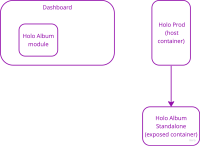

BURLEIGH: Lucy. Thank God you’ve come back. Why are you dressed so strangely? JANEWAY: It’s a costume. BURLEIGH: You’d look lovely in anything. I’ve thought of you constantly. Remembered your touch, your perfume, your lips JANEWAY: Computer, delete character.
(Startrek Voyager: Persistence of Vision)
We are the employees of Holodeck Inc, who develops and maintains the system, working on latest updates and improvements.
Our platform is responsible for supplying the holodecks all around the world with numerous new hologram characters, finding replacements, picking the best candidates for the holo-plots, advertisements and etc.
Through our platform the holo-producers can reach to holo-creators and we are provide the necessary tools for them to share and distribute their content (latter) search for content and compile it into the final product (formers).
Our platform consists of 2 mobile apps - one for holo-producers and another for holo-artists and a central dashboard that allows our admins and holo-casters to assist producers in finding everything they need.

Recently Holodeck Inc management decided to completely revamp their central dashboard and we were tasked to create a new and shiny web console made with ReactJS. One of the major new features there is our brand new Holoalbum - a dynamic and powerful react.js component that lets our holo-casters prepare a list of recommended holo-characters with all their characteristics, multiple photos and etc. This component lets manually order, filter, hide and further fine tune the list. The result should be visible within the ProdApp as a similar but much simplified version.

The most challenging here was that we had to implement Holoalbum twice: admin version on a new Fresh react.js dashboard webapp and limited producers version on HoloProd app. HoloProd app was initially developed by subcontractors as react.native app for iPads. Unfortunately implementation was very poor. Later we had to add a lot of functionality there including web version (react native web), mfa (Firebase) and secure encrypted offline storage that was leveraging service workers in web version. Since it was a project dedicated to revamping admin dashboard and not the apps and we were very limited in terms of time and resources we would prefer to deal with HoloProd codebase as little as possible.
After serious considerations we decided to try a new micro frontend architecture to achieve maximal code reusability and to minimize the unpleasant updates to react.native app code.
Holodeck Inc management agreed Holoalbums to be a web version only feature (iPad version was very rarely used by the time anyway ).
First Approach: Simply Copy the Code
We had a ready-made Holoalbum component that we used in the admin panel. We needed to use it in HoloProd. But HoloProd was written in react.native, and we didn’t want to touch it. Therefore, we decided to create a new CRA project for the producer version of the Holo Album, transferring the main album components from the admin panel and connecting it to HoloProd as a micro frontend.

We quickly tested this scenario on an empty component and confirmed that the idea was workable and that we could indeed just “connect” a new component for viewing albums to the web version of the react.native mobile app.
The web version of the app was built using Webpack, which we modified by adding a new plugin.
new ModuleFederationPlugin({
name: "host",
remotes: {
remote: `remote@${PRODUCER_ALBUM_APP_URL}/remoteEntry.js`,
},
shared: {
react: {
singleton: true,
requiredVersion: packageJson.dependencies["react"],
},
"react-dom": {
singleton: true,
requiredVersion: packageJson.dependencies["react-dom"],
},
},
})Almost everything here is taken from the simplest example in the Module Federation repository.
The variable PRODUCER_ALBUM_APP_URL contains the address of the web version of HoloProd. We pass it to the script through environment variables.
const PRODUCER_ALBUM_APP_URL =
process.env.PRODUCER_ALBUM_APP_URL || "http://localhost:3002";The documentation’s description of shared modules is quite convoluted: > Shared modules are modules that are both overridable and provided as overrides to nested containers. They usually point to the same module in each build, e.g., the same library.
The packageName option allows setting a package name to look for a requiredVersion. It is automatically inferred for the module requests by default, set requiredVersion to false when automatic inference should be disabled.
In practice, this means that you need to specify in shared modules those dependencies that can be used in both projects and specify specific versions of these dependencies unless they match. You don’t need to list all modules, as done in the example. In our case, doing so led to compilation errors because react.native modules have build peculiarities. Additionally, the project had links to custom modules in GitHub, which also caused errors.
Besides that, we immediately encountered a compilation error, which is the first one listed in the documentation:
Uncaught Error: Shared module is not available for eager consumption
As the documentation suggests, the issue is the attempt to import modules that load asynchronously. So, if in App.js, for example, we import react, and this module still needs to be downloaded asynchronously, the application won’t be able to find it. Therefore, the documentation recommends using lazy loading. Move the entry file’s code (in our case index.web.js) to a separate module (bootstrap.web.js), and in the main entry file, leave only the asynchronous import.
// index.web.js
import("./bootstrap.web");Using Micro-Frontends with React and Webpack
We utilize React.Suspense to display a loading spinner while the micro-frontend is being loaded. Moreover, we employ the standard screen framework: a Header combined with a ScrollView to present our external component within the app’s default screen. To ensure our micro-frontend can successfully make API requests, we pass it the user’s token, which we obtain during authentication.
The external component is loaded using React.lazy, allowing for dynamic component loading. In our context, since we use Webpack to bundle our application, we can employ the import() directive for component loading.
// ProdAlbum.web.js
const RemoteProducerAlbum = React.lazy(() => import("remote/App"));remote/App.js serves as the entry point to our micro-frontend. Within this file, we export our Album component to be displayed inside our host application.
The modifications to the host application are limited to:
- Crafting a screen framework that displays the external component.
- Incorporating it into the navigation.
- Adapting the Webpack configuration to integrate the Module Federation Plugin.
This approach equipped us to address the following challenges:
- Minimized Changes to Host Application: As observed, the only significant modification required was integrating the Module Federation Plugin. Everything else involved creating new code or making minor adjustments to the existing code.
- Leveraging Host Application Capabilities: Album access utilizes the same security mechanisms (MFA) as within the host application. Additionally, we can capitalize on any other features of the host application, like employing Redux for data storage accessible within the external component, or utilizing built-in navigation and styling components.
Second Approach: Utilizing the Admin’s Codebase
Soon, we realized that we could simply use the admin’s codebase to develop a new producer web application. Instead of extracting Album components from the admin panel, we created a separate container wrapper that internally used the same components as the main album container. The differences were the unavailability of some editing tools, hiding a few extra elements, and the use of a specialized service fetching the Album’s data from a different endpoint. Unlike the admin endpoint, this one accepted producer tokens and performed additional access checks.

This way, we eliminated the need for an extra application and redundant code. To launch and build the producer web app, we added separate scripts in the package.json, drawing inspiration from the same example by the plugin’s author. Since the admin panel was initially built on CRA (Create React App), this example was highly beneficial for us.
Following the example, we exported the plugin configuration to a separate file named modulefederation.config.js. Everything here is standard: it’s essential that the container’s name remained the same as we used in the host application (remote), and the path to the root file matched what we use in the host app’s import (App).
module.exports = {
name: 'remote',
exposes: {
'./App': './src/App',
},
filename: 'remoteEntry.js',
/* ... */
}Using separate scripts for launching and building allows us to modify the default webpack configuration, incorporating the ModuleFederationPlugin and feeding it settings from modulefederation.config.js. In doing so, we don’t have to introduce any specialized tools like rewired. Everything remains transparent and straightforward.
Besides integrating the plugin, our webpack.config override redefines the entry point: rather than index.tsx, which initializes the full-blown admin app, we designate a specific file that solely initializes our ProdAlbum component.
// override/webpack.config.js
const override = config => {
config.plugins.push(new ModuleFederationPlugin(require('../../../modulefederation.config.js')));
config.output.publicPath = 'auto';
config.entry = [
"./src/index-producers-lookbook"
]
return config;
};This index employs the same technique for asynchronous component loading: directly in the index file, there’s only one asynchronous import that fetches the bootstrap module. This module, in turn, imports and passes to the ReactDOM.render a wrapper application, which returns the album component and its context.
// ProdAlbumApp.tsx
const ProdAlbumApp = (props: { idToken: string }) => {
/* ... */
const prodAlbumPorts = useMemo(
() => ProdAlbumServiceFactory.getPortsContext(props.idToken, toastsVM, loadingIndicatorVM),
[props.idToken]
);
const [documentId, setDocumentId] = useState('');
useEffect(() => {
const id = new URL(window.location.href).searchParams.get('id');
if (id) {
setDocumentId(id);
}
}, []);
if (!documentId) {
return <Spinner />;
}
return (
<CastingPortsContext.Provider value={prodAlbumPorts}>
<div className='bg-white p-2'>
<ProdAlbumDocumentContainer
documentId={documentId}
documentState={DocumentStateEnum.Edit}
/>
</div>
</CastingPortsContext.Provider>
);
};A significant example where we utilize the document ID, extracting it from the URL, as well as the idToken passed to the component, which we obtained in the host application. This token is used to initialize a specific service that fetches Album data from a particular endpoint, verifying a specific producer’s access rights to this document.
This way, we can avoid concerns about initializing all other services and contexts used in the admin panel (authorization, global redux store, etc.), and connect directly to our component, preparing only the necessary contexts and services for it.
Worthy of separate mention is the publicPath parameter set in the example to ‘auto’. As per the documentation, it defines the base path for all static resources that will be generated by Webpack. In the CRA template, this parameter is based on PUBLIC_URL or homePage in package.json. If we want to use the same template for different applications but with different publicPaths, we can use the ‘auto’ value, allowing Webpack to independently determine the publicPath based on the current URL. Since we use homePage in the main project, we tried to set this same path in publicPath. However, this didn’t work, and we encountered a loading error:
Uncaught ChunkLoadError: Loading chunk … failed.
The reason being, since we compile a separate Album bundle and place it on a separate hosting, the homePage in package.json will not match the current URL. In the end, we settled on the following solution: keep the value of publicPath = ‘auto’, and directly in the launch and build scripts, rewrite the PUBLIC_URL to its default value:
process.env.PUBLIC_URL = '/'Deployment
The build and publication of the web version of ProdApp and the ProdAlbum bundle are executed using Firebase’s static hosting and Github Actions CI. Firebase offers all the conveniences, including workflow templates for Github Actions, as well as automated addresses for preview versions. We store the path to the ProdAlbum bundle (PRODUCER_ALBUM_APP_URL) in GitHub secrets and remember to pass it in the corresponding workflow.
# Prod App workflow
# ...
- name: Build
run: yarn run web:build-stage
env:
PRODUCER_ALBUM_APP_URL: ${{ secrets.PRODUCER_ALBUM_APP_URL }}In both cases, for the SPA to work correctly, it is necessary to set up redirection rules to index.html. In Firebase, this is done using the firebase.json file:
{
"hosting": {
"rewrites": [
{
"source": "**",
"destination": "/index.html"
}
]
}
}Additionally, to display the fonts correctly from the ProdAlbum bundle, it was necessary to add the Access-Control-Allow-Origin header:
{
"headers": [ {
"source": "**/*.@(eot|otf|ttf|ttc|woff|font.css)",
"headers": [ {
"key": "Access-Control-Allow-Origin",
"value": "*"
} ]
} ]
}Conclusions
We believe that this case serves as an example of effective microfrontends implementation in practice. We managed to significantly reduce development time by “plugging in” new features into an outdated project, taking it from a codebase that was actively being developed and almost ready to use, rather than rebuilding it on the base of an older project. Additionally, we avoided duplicating code that was common to both projects, allowing its use in both applications.
Of course, this led to the emergence of an additional dependency: ProdApp now relies on the ProdAlbum bundle, which is part of the Dashboard codebase. However, since the ProdAlbum is built and deployed separately from the Dashboard, this dependency doesn’t introduce any additional risks that an update to the Dashboard might inadvertently break the ProdApp. Moreover, this dependency adheres to the “single responsibility principle,” since the business logic of the Album is concentrated in one place. If anything changes regarding how the Albums look or operate in the Dashboard, it would most likely result in changes to ProdAlbum.
A key point in this case in favor of choosing microfrontends was how easily we were able to transfer the authorization token from the ProdApp environment to ProdAlbum. Had we simply launched a microsite for viewing the Albums and placed it on the same domain as the ProdApp, we would not have been able to leverage the authorization in ProdApp for access to ProdAlbum. Instead, we would have had to implement another authentication mechanism for ProdAlbum, which would not have been optimal from a security standpoint and would have required additional user actions.
We’d like to thank the plugin creator, Zack Jackson, for his work and the excellent set of examples from which we drew a lot of valuable insights (not only for this case). On the other hand, we feel that the documentation for the plugin and Webpack in general could be more detailed and clear. For instance, the explanations regarding shared modules and publicPath in the plugin’s documentation are not entirely clear and don’t provide a full understanding of how they operate.